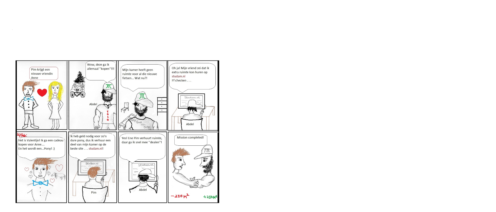

Strip
Ik heb als mini-opdracht gekozen: een tekort aan studentenwoningen.
Als oplossing heb ik bedacht dat bestaande ruimtes zoals kantoorpanden die te huur staan als studentenwoningen worden omgebouwd.
Deze kamers worden d.m.v schuivende muren gebouwd zodat de ruimtes kunnen worden vergroot en verkleind.
Als interface heb ik een interactieve website bedacht: studam.nl waarop studenten gedeeltes van een kamer kunnen (ver)huren.
